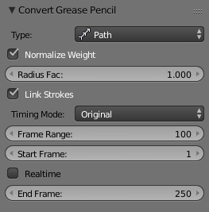

转化为几何物体¶
参考
模式: 所有模式
Panel:
菜单:
快捷键:
Alt-C

转换为曲线选项。
在3D视图中，可以基于当前视图设置，通过将绘制的(构成笔画的)端点变换至3D空间，将活动层中的草图转换为几何体。目前，会对所有端点进行转换，所以有必要对转换得到的几何体进行简化或细分，以做标准用途。
如 Convert Grease Pencil 下拉菜单所提示的一样，可以将草图转换为曲线。
选项¶
- 类型
转换为的物体类型。
- 路径
- 创建2阶3位 NURBS 曲线 (亦即类似折线)。
- 贝塞尔曲线
- 创建贝塞尔曲线，控制柄类型为 "对齐" (亦即同样类似折线)。
- 多边形曲线
- 直线段构成的贝塞尔曲线(自动手柄)。
Note
转换为网格
如果要将草图转换为网格，只需选择 NURBS ，然后再将得到的曲线转换为网格。
- 将权重规格化
Will scale weights value so that they fit tightly into the (0.0 to 1.0) range.
这意味着用户可以使用压力绘图板直接控制转换后曲线的半径和权重，借之影响挤出宽度，或者通过 跟踪路径 约束或者 曲线 修改器影响物体尺寸！
- 连接笔触
- 从活动蜡笔图层所有笔画，创建单根样条曲线，即曲线元素，默认启用。这在用户需要将曲线当做路径使用时尤其有用。所有笔画之间使用 "零权重/笔画" 线段连接。
时序¶
蜡笔保存 "动态" 数据，亦即笔画的绘制速度。当转换为曲线后，该数据可用于创建 计算时间 的F曲线(换句话说，路径动画)，可用在控制其他物体沿曲线的位置(跟随路径 约束，或驱动控制的 曲线 修改器)。这样，用户可以再现绘制动作。
Important
所有"时序" 选项都需要启用 连接笔触 ，否则这些都没有意义！
- 时序模式
用于选择如何使用时序数据。
- 无时序
- 仅生成曲线，不保留动画数据(因此下面的选项将隐藏)。
- 线性
- 路径动画类型为线性。
- Original
- The path animation will reflect to original timing, including for the "gaps" (i.e. time between strokes drawing).
- Custom Gaps
- The path animation will reflect to original timing, but the "gaps" will get custom values. This is especially useful if you have very large pauses between some of your strokes, and would rather like to have "reasonable" ones!
- 帧范围
- 生成的路径动画 长度，单位帧。换句话说，就是 解算时间 最大值。
- 起始帧
- 路径动画的起始帧
- 实时
- When enabled, the path animation will last exactly the same duration it took you do draw the strokes.
- 结束帧
- 当禁用 实时 时，用于定义路径动画的结束帧。这意味着绘制时间将缩放至匹配指定范围。
- Gap Duration
- Custom Gaps only. The average duration (in frames) of each gap between actual strokes. Please note that the value entered here will only be exact if Realtime is enabled, otherwise it will be scaled, exactly as the actual strokes' timing is!